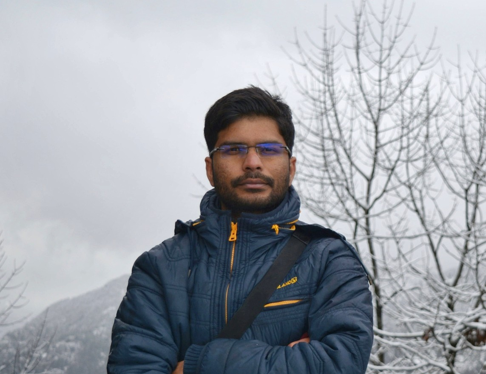

PhD Candidate · Civil Engineering, IIT Roorkee
Structural Engineering Researcher & Ph.D. Candidate at IIT Roorkee with 7+ years of experience in academia and industry. I combine complex experimentation with advanced signal processing (AE monitoring, FFT, GMMs) and numerical modeling to diagnose hidden damage in concrete structures under coupled corrosion-fatigue environments. Former Assistant Professor and Project Manager with a proven record in structural auditing, funded research, and journal publishing.

About Me
I am a doctoral candidate (thesis submitted) in the Department of Civil Engineering at the Indian Institute of Technology Roorkee, where my research centers on the coupled corrosion-fatigue behavior of reinforced concrete — a critical, under-modeled failure mode in aging infrastructure worldwide.
My work combines acoustic emission (AE) monitoring, advanced signal processing (FFT, cepstrum analysis, Gaussian Mixture Models), and physics-informed analytical frameworks to detect and predict structural damage before it becomes catastrophic. I build MATLAB-based pipelines to process large experimental datasets and translate micro-scale flaw evolution into macro-scale structural health metrics.
Before returning to research, I spent nearly seven years as an Assistant Professor teaching structural analysis and RCC design, and worked as a project manager overseeing live construction and structural audits — experience that keeps my research firmly grounded in real-world engineering practice.
Career Path
Aug 2021 – Present
Indian Institute of Technology Roorkee
Leading SERB-funded research on fracture and fatigue performance of reinforced concrete under coupled corrosion-fatigue environments, combining acoustic emission monitoring with analytical and modeling.
Jan 2018 – Jul 2021
Jabalpur Engineering College
Taught Structural Analysis, RCC Design, and Engineering Mechanics; supervised undergraduate final-year projects on structural assessment and construction materials. Led multiple Central and MP State government structural audit and design consultancy projects.
Jul 2014 – Jan 2018
The ICFAI University
Delivered core Civil Engineering coursework across multiple semesters and mentored students through experimental and analytical structural engineering projects.
Jul 2013 – Jun 2014
Jones Lang LaSalle
Managed civil construction of a 2B+G+7 storey hostel building in Mumbai — coordinating contractors, consultants, and clients while monitoring timelines, costs, and quality compliance across structural and finishing works.
SERB, India · 2021–2024
Core PhD research investigating fracture and fatigue performance of reinforced concrete under simultaneous corrosion and cyclic loading.
NPIU (TEQIP-III) · 2019–2020
Collaborative funded research using ABAQUS to simulate nonlinear concrete damage under impact loading.
CPWD · 2020–2021
Structural design of first-floor slab and beam per IS codes, plus a full soundness evaluation of an existing office building.
Hon'ble High Court of MP · 2019
Structural audit of buildings within the High Court complex, including a heritage structure.
CARRS 2025 — 2nd International Conference on Condition Assessment, Rehabilitation & Retrofitting of Structures
Postgraduate scholarship awarded through GATE qualification
Research Output
Peer-reviewed journal articles, conference proceedings, and ongoing research on acoustic emission and corrosion-fatigue in reinforced concrete.
Behaviour of Reinforced Cement Concrete Under Coupled Corrosion Fatigue — FraMCoS XII, IA-FraMCoS, 2025
Prediction of Crack Path in Reinforced Concrete Using Acoustic Emission Analysis — Procedia Structural Integrity, Elsevier, 2024
Effects of Coupled Corrosion and Fatigue on the Performance of Reinforced Cement Concrete — FraMCoS-11, IA-FraMCoS, 2023
Let's Connect
Open to research collaborations, peer discussions, and opportunities in structural health monitoring, acoustic emission, and durability engineering.
Department of Civil Engineering, Indian Institute of Technology Roorkee, Uttarakhand, India